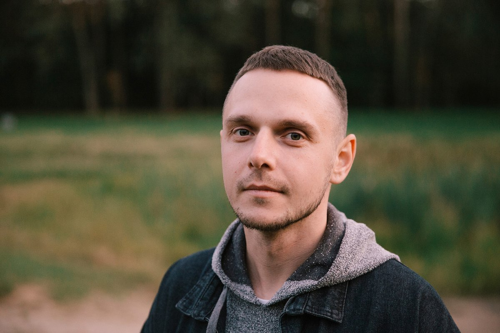

- 
-

-
Anton Ptushkin
Anton shows the beauty of nature and architecture, asks the locals about the peculiarities of the country or city. The quality of shooting, framing and selection of music delight and inspire to visit new countries
-
Leonid Pashkovskiy-"Take me back home"
Leonid goes to the most dangerous, uncomfortable and completely non-tourist places on Earth and takes pictures of the life of people without embellishment
-
"We will go alone"
Lisa and Vitalik have been traveling together since 2011. They try to live in different countries, talk about their impressions, prices in tourist areas and the life of those who have long moved to live abroad.
-
The люди
YouTube channel author Anton Lyadov became famous for his textured documentary videos in which he tells subscribers about the life of people in different countries. The blogger goes to the hottest spots in the world to show the political and not only the situation in the country.